Corpus / illustrated study guides
Human Anatomy Study Guides: 74 Illustrated Body Systems
How do all 74 regional and systemic chapters fit together inside one living body? Browse our complete library of illustrated human anatomy study guides below—each chapter pairs an interactive anatomical plate with three-paragraph physiological overviews, 1,586 documented part records, Latin terminology, clinical context, and five frequently asked study questions.
 Inside the human heartChambers · valves · coronary blood flow↗
Inside the human heartChambers · valves · coronary blood flow↗Anatomy foundations
 24 documented partsAnatomical language · planes & movementThe universal coordinate system of medicine: standard anatomical position, sagittal, coronal, and transverse planes, directional pairs, and joint movements.
24 documented partsAnatomical language · planes & movementThe universal coordinate system of medicine: standard anatomical position, sagittal, coronal, and transverse planes, directional pairs, and joint movements. 28 documented partsBody cavities · regions & quadrantsMapping dorsal and ventral body cavities, double-layered serous membranes, and patient-oriented four abdominal quadrants and nine clinical surface regions.
28 documented partsBody cavities · regions & quadrantsMapping dorsal and ventral body cavities, double-layered serous membranes, and patient-oriented four abdominal quadrants and nine clinical surface regions. 28 documented partsCells & four basic tissuesHow cell organelles and the four fundamental human tissues—epithelial sheets, connective matrix, contractile muscle, and excitable neurons—build every organ.
28 documented partsCells & four basic tissuesHow cell organelles and the four fundamental human tissues—epithelial sheets, connective matrix, contractile muscle, and excitable neurons—build every organ.Conception to birth
 20 documented partsFertilization · sperm meets oocyteFrom sperm capacitation and the acrosome reaction in the uterine tube ampulla to the fast cortical block against polyspermy and diploid zygote formation.
20 documented partsFertilization · sperm meets oocyteFrom sperm capacitation and the acrosome reaction in the uterine tube ampulla to the fast cortical block against polyspermy and diploid zygote formation. 20 documented partsZygote to blastocyst · early divisionsRapid mitotic cleavage without cell growth transforms the single-celled zygote into a compact 16-cell morula and a fluid-filled blastocyst ready to hatch.
20 documented partsZygote to blastocyst · early divisionsRapid mitotic cleavage without cell growth transforms the single-celled zygote into a compact 16-cell morula and a fluid-filled blastocyst ready to hatch. 20 documented partsImplantation · blastocyst in endometriumHow the hatched blastocyst anchors to the receptive uterine endometrium, differentiates into cytotrophoblast and syncytiotrophoblast, and forms a bilaminar disc.
20 documented partsImplantation · blastocyst in endometriumHow the hatched blastocyst anchors to the receptive uterine endometrium, differentiates into cytotrophoblast and syncytiotrophoblast, and forms a bilaminar disc. 20 documented partsPlacenta · maternal–fetal exchangeBranching chorionic villi, the maternal intervillous blood space, and the three-vessel umbilical cord exchange oxygen and nutrients without mixing bloodstreams.
20 documented partsPlacenta · maternal–fetal exchangeBranching chorionic villi, the maternal intervillous blood space, and the three-vessel umbilical cord exchange oxygen and nutrients without mixing bloodstreams. 20 documented partsEmbryo · early organ formationWeeks three to eight: gastrulation establishes ectoderm, mesoderm, and endoderm as the neural tube closes, somites segment, and major organ systems take shape.
20 documented partsEmbryo · early organ formationWeeks three to eight: gastrulation establishes ectoderm, mesoderm, and endoderm as the neural tube closes, somites segment, and major organ systems take shape. 20 documented partsFetus · growth & pregnancy trimestersFrom week nine to birth: trimester growth, surfactant maturation in developing lungs, and the three fetal circulatory shunts that bypass the lungs and liver.
20 documented partsFetus · growth & pregnancy trimestersFrom week nine to birth: trimester growth, surfactant maturation in developing lungs, and the three fetal circulatory shunts that bypass the lungs and liver. 20 documented partsLabor stage 1 · cervix dilatesRhythmic myometrial contractions pull the collagen-rich cervix upward, thinning (effacing) and dilating the cervical canal to a full ten centimeters.
20 documented partsLabor stage 1 · cervix dilatesRhythmic myometrial contractions pull the collagen-rich cervix upward, thinning (effacing) and dilating the cervical canal to a full ten centimeters. 20 documented partsLabor stage 2 · birth of babyFrom complete cervical dilation to birth: how the fetus flexes, rotates, and extends through the curved maternal pelvis and levator ani muscular sling.
20 documented partsLabor stage 2 · birth of babyFrom complete cervical dilation to birth: how the fetus flexes, rotates, and extends through the curved maternal pelvis and levator ani muscular sling. 20 documented partsLabor stage 3 · delivery of placentaAfter the baby is born, interlacing uterine muscle fibers contract like living ligatures to constrict spiral arteries and cleanly deliver the placenta.
20 documented partsLabor stage 3 · delivery of placentaAfter the baby is born, interlacing uterine muscle fibers contract like living ligatures to constrict spiral arteries and cleanly deliver the placenta.Circulatory
22 documented partsHeartTwo synchronized muscular pumps in one organ: four chambers, four one-way valves, coronary arteries, and the intrinsic SA-to-Purkinje electrical pacemaker.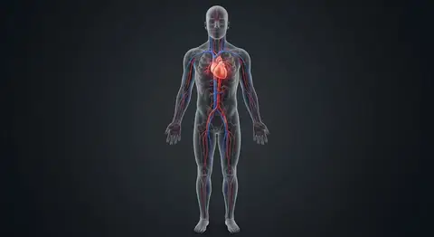
20 documented partsVascular systemHigh-pressure elastic and muscular arteries branching from the aorta paired with valve-guarded veins and portal circuits returning blood to the heart. 20 documented partsBone marrow & bloodInside spongy trabecular bone, pluripotent hematopoietic stem cells generate millions of oxygen-carrying red cells, immune leukocytes, and platelets every second.
20 documented partsBone marrow & bloodInside spongy trabecular bone, pluripotent hematopoietic stem cells generate millions of oxygen-carrying red cells, immune leukocytes, and platelets every second.Respiratory
 21 documented partsLungsTwenty-three generations of branching airways lead to hundreds of millions of elastic alveoli where inspired air meets pulmonary capillary blood across 0.5 µm.
21 documented partsLungsTwenty-three generations of branching airways lead to hundreds of millions of elastic alveoli where inspired air meets pulmonary capillary blood across 0.5 µm.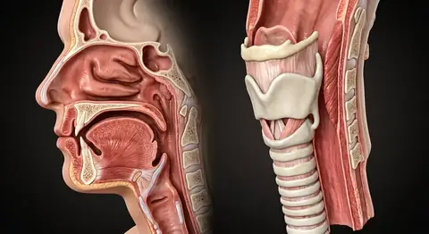
20 documented partsUpper airwayWarming nasal conchae, the three-part pharynx, and the nine cartilages of the larynx that protect the lower airway during swallowing and vibrate vocal folds.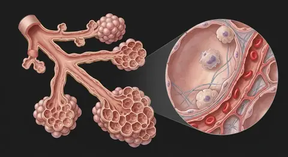
20 documented partsPulmonary acinus · gas-exchange barrierInside the terminal respiratory unit: flat Type I pneumocytes, surfactant-secreting Type II cells, alveolar macrophages, and the 0.5-micron blood-air barrier.Nervous
 20 documented partsBrainFolded cerebral lobes, white-matter commissures, deep thalamic and basal nuclei, cerebellum, and brainstem circuits floating in protective cerebrospinal fluid.
20 documented partsBrainFolded cerebral lobes, white-matter commissures, deep thalamic and basal nuclei, cerebellum, and brainstem circuits floating in protective cerebrospinal fluid. 22 documented partsSpinal cordProtected inside the vertebral canal, a butterfly core of gray-matter neuron horns is surrounded by ascending sensory and descending motor white-matter tracts.
22 documented partsSpinal cordProtected inside the vertebral canal, a butterfly core of gray-matter neuron horns is surrounded by ascending sensory and descending motor white-matter tracts.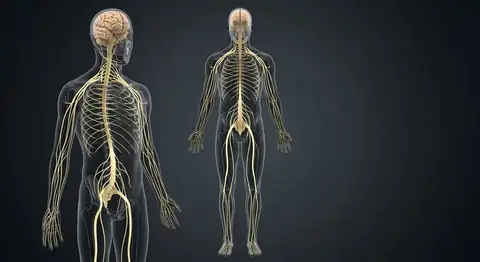
20 documented partsNervous system — overviewOne integrated signaling web: the central brain and spinal cord compute while 12 pairs of cranial nerves and 31 pairs of spinal nerves link every tissue.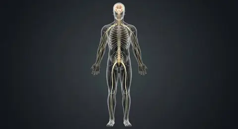
20 documented partsNervous system — maleWhole-body central and peripheral nerve pathways on the male figure, highlighting limb plexuses alongside prostatic, cavernous, and pudendal pelvic nerves.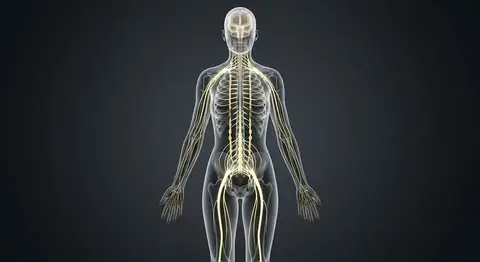
20 documented partsNervous system — femaleWhole-body central and peripheral nerve pathways on the female figure, highlighting limb plexuses alongside uterovaginal autonomic and pudendal pelvic nerves. 20 documented partsCranial nervesTwelve paired nerves (CN I–XII) emerge directly from the forebrain and brainstem, passing through skull-base foramina to serve special senses, face, and viscera.
20 documented partsCranial nervesTwelve paired nerves (CN I–XII) emerge directly from the forebrain and brainstem, passing through skull-base foramina to serve special senses, face, and viscera.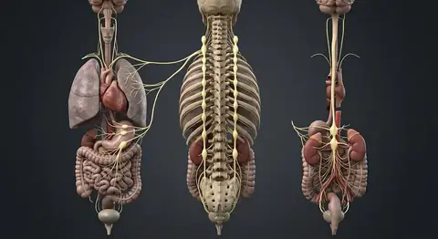
20 documented partsAutonomic nervous systemThe involuntary balance between thoracolumbar sympathetic fight-or-flight chains, craniosacral vagal and pelvic parasympathetic rest-and-digest outflow, and gut plexuses. 20 documented partsFacial nerve · CN VIITracing Cranial Nerve VII from the pons through the temporal bone canal and parotid gland to its five facial expression branches, chorda tympani taste, and tear fibers.
20 documented partsFacial nerve · CN VIITracing Cranial Nerve VII from the pons through the temporal bone canal and parotid gland to its five facial expression branches, chorda tympani taste, and tear fibers. 20 documented partsTrigeminal nerve · CN VTracing Cranial Nerve V from the trigeminal ganglion into ophthalmic (V1), maxillary (V2), and mandibular (V3) sensory territories plus the muscles of chewing.
20 documented partsTrigeminal nerve · CN VTracing Cranial Nerve V from the trigeminal ganglion into ophthalmic (V1), maxillary (V2), and mandibular (V3) sensory territories plus the muscles of chewing.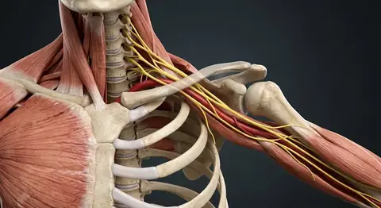
20 documented partsBrachial plexus · arm nervesHow spinal nerve roots C5–T1 braid into trunks, divisions, and cords to form the musculocutaneous, axillary, radial, median, and ulnar nerves of the upper limb.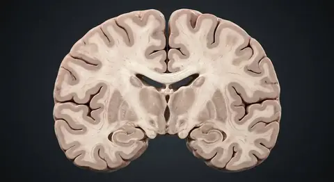
20 documented partsCerebrum · cortex & deep pathwaysCoronal deep-brain architecture: six-layered neocortex, corpus callosum, internal capsule projection highway, caudate, putamen, globus pallidus, and thalamus.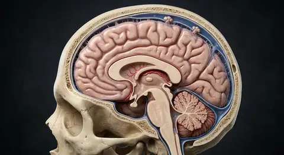
20 documented partsMeninges, CSF & venous sinusesThree protective meningeal membranes (dura, arachnoid, pia), buoyancy-providing cerebrospinal fluid from choroid plexuses, and dural venous sinus drainage.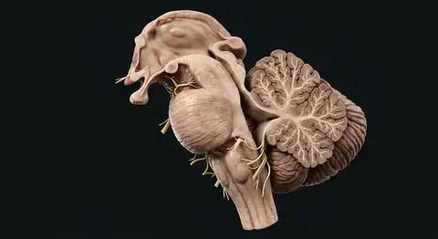
20 documented partsBrainstem & cerebellar circuitryMidbrain, pons, and medulla oblongata nuclei, corticospinal pyramidal decussation, and the three peduncles linking the brainstem to the cerebellar cortex.Digestive
 20 documented partsLiverFed by both the nutrient-rich portal vein and oxygen-rich hepatic artery, the liver's hexagonal lobules synthesize proteins, detoxify blood, and secrete bile.
20 documented partsLiverFed by both the nutrient-rich portal vein and oxygen-rich hepatic artery, the liver's hexagonal lobules synthesize proteins, detoxify blood, and secrete bile. 20 documented partsStomach & intestinesA continuous muscular digesting and absorbing tube from the acid-churning stomach through the villus-lined small intestine to the water-reclaiming colon.
20 documented partsStomach & intestinesA continuous muscular digesting and absorbing tube from the acid-churning stomach through the villus-lined small intestine to the water-reclaiming colon. 21 documented partsPancreasA dual-function retroperitoneal gland: exocrine acini secrete bicarbonate and digestive enzymes into the duodenum while endocrine islets regulate blood glucose.
21 documented partsPancreasA dual-function retroperitoneal gland: exocrine acini secrete bicarbonate and digestive enzymes into the duodenum while endocrine islets regulate blood glucose. 20 documented partsHepatic lobule · liver microanatomyHexagonal liver micro-units where portal vein and hepatic artery blood flows inward across fenestrated sinusoids to the central vein while bile flows outward.
20 documented partsHepatic lobule · liver microanatomyHexagonal liver micro-units where portal vein and hepatic artery blood flows inward across fenestrated sinusoids to the central vein while bile flows outward.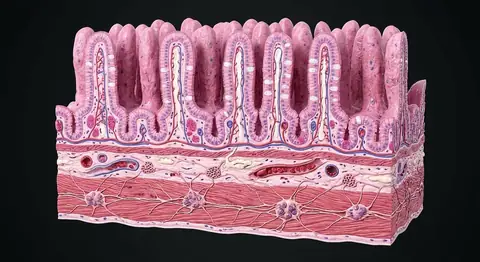
20 documented partsSmall intestine · wall & enteric plexusesFour gastrointestinal wall tunics, absorptive villi with central lacteals, stem-cell crypts of Lieberkühn, and the submucosal and myenteric enteric nerve plexuses. 76 documented partsTeeth · dental anatomyInteractive Universal (#1–32 / A–T) and FDI two-digit dental charts, four tooth classes, enamel-dentin-pulp layers, periodontal ligaments, and V2/V3 nerves.
76 documented partsTeeth · dental anatomyInteractive Universal (#1–32 / A–T) and FDI two-digit dental charts, four tooth classes, enamel-dentin-pulp layers, periodontal ligaments, and V2/V3 nerves.Urinary
 20 documented partsKidneyRetroperitoneal filtration powerhouses: outer renal cortex, medullary pyramids, calyces, and a million nephrons that purify blood plasma and balance body water.
20 documented partsKidneyRetroperitoneal filtration powerhouses: outer renal cortex, medullary pyramids, calyces, and a million nephrons that purify blood plasma and balance body water. 20 documented partsUrinary bladderA compliant three-layered detrusor muscle reservoir lined by stretchable transitional urothelium, guarded by a smooth trigone and dual urethral sphincters.
20 documented partsUrinary bladderA compliant three-layered detrusor muscle reservoir lined by stretchable transitional urothelium, guarded by a smooth trigone and dual urethral sphincters.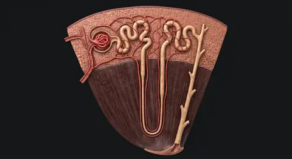
20 documented partsNephron · kidney microanatomyFrom the fenestrated glomerulus and podocyte filtration slits through the proximal tubule, countercurrent loop of Henle, macula densa, and collecting duct.Sensory
 20 documented partsEyeA self-focusing optical globe: transparent cornea and crystalline lens bend light onto a ten-layered neural retina packed with rod and cone photoreceptors.
20 documented partsEyeA self-focusing optical globe: transparent cornea and crystalline lens bend light onto a ten-layered neural retina packed with rod and cone photoreceptors.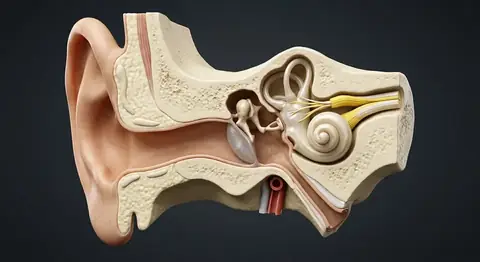
22 documented partsEarThree connected compartments in the temporal bone convert airborne pressure waves into cochlear nerve signals while tracking head rotation and gravity.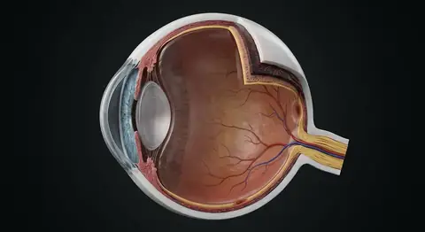
20 documented partsEye · microscopic layersMicroscopic architecture of the three ocular coats: five-layered cornea, aqueous humor flow from ciliary processes to Schlemm's canal, and zonular lens suspension.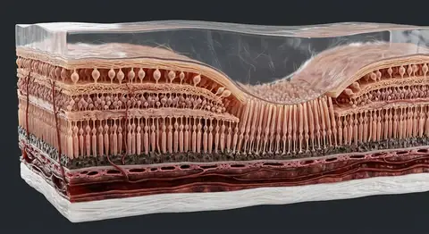
20 documented partsRetina · neural microanatomyHow light traverses ten transparent neural layers to trigger rod and cone phototransduction, bipolar-to-ganglion processing, and high-acuity foveal vision.Skeletal system
 31 documented partsSkeletonAll 206 named adult bones—80 axial and 126 appendicular—plus compact osteons, spongy trabecular struts, red marrow cavities, and major joint families.
31 documented partsSkeletonAll 206 named adult bones—80 axial and 126 appendicular—plus compact osteons, spongy trabecular struts, red marrow cavities, and major joint families. 20 documented partsJoints & ligamentsHow fibrous sutures, cartilaginous symphyses, and fluid-lubricated synovial capsules balance smooth anatomical motion with ligamentous joint stability.
20 documented partsJoints & ligamentsHow fibrous sutures, cartilaginous symphyses, and fluid-lubricated synovial capsules balance smooth anatomical motion with ligamentous joint stability. 20 documented partsShoulder jointWhy the shallow ball-and-socket glenohumeral joint achieves 360-degree reach, stabilized by the fibrocartilaginous labrum and four SITS rotator cuff tendons.
20 documented partsShoulder jointWhy the shallow ball-and-socket glenohumeral joint achieves 360-degree reach, stabilized by the fibrocartilaginous labrum and four SITS rotator cuff tendons. 30 documented partsSkull & facial bonesComplete osteology of all 22 adult skull bones—8 cranial vault bones and 14 facial bones—paired with anterior surface and medial sagittal cutaway views.
30 documented partsSkull & facial bonesComplete osteology of all 22 adult skull bones—8 cranial vault bones and 14 facial bones—paired with anterior surface and medial sagittal cutaway views.Muscular system

Female reproductive
 20 documented partsFemale reproductive systemCyclic follicle maturation in the ovaries, ciliary transport along the uterine tubes, a hormonally dynamic uterus and cervix, vaginal canal, and external vulva.
20 documented partsFemale reproductive systemCyclic follicle maturation in the ovaries, ciliary transport along the uterine tubes, a hormonally dynamic uterus and cervix, vaginal canal, and external vulva.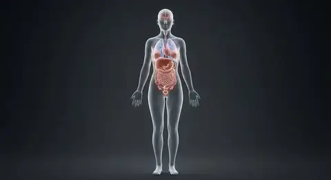
20 documented partsFemale body — anteriorStandard anatomical position on the anterior female figure: thoracic, abdominal, pelvic, and limb surface landmarks connected to deeper organ systems.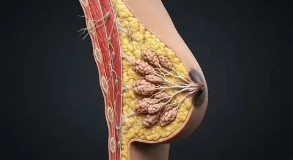
20 documented partsBreastMammary glandular lobules and converging lactiferous ducts supported by fibrous Cooper ligaments over the pectoral fascia, with key axillary lymphatic drainage. 20 documented partsFemale pelvis & perineumSagittal and perineal views of the female pelvis: bladder, anteverted uterus, vesicouterine and rectouterine pouches, levator ani floor, and perineal body.
20 documented partsFemale pelvis & perineumSagittal and perineal views of the female pelvis: bladder, anteverted uterus, vesicouterine and rectouterine pouches, levator ani floor, and perineal body. 20 documented partsUterus — layers & cavityFrom the dome-like fundus to the internal os: how the cyclic endometrium, thick smooth-muscle myometrium, and spiral arteries remodel across life stages.
20 documented partsUterus — layers & cavityFrom the dome-like fundus to the internal os: how the cyclic endometrium, thick smooth-muscle myometrium, and spiral arteries remodel across life stages.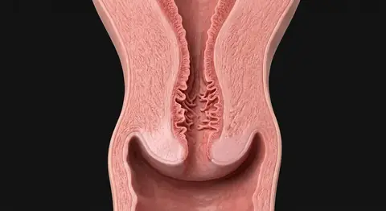
20 documented partsCervix — transformation zoneThe collagen-dense lower neck of the uterus, where mucus-secreting columnar endocervical epithelium meets squamous ectocervix at the transformation zone. 20 documented partsOvary & uterine tubeFollicular waves and corpus luteum formation in the ovarian cortex paired with the fimbriae, wide ampulla, and ciliated mucosa of the fallopian tube.
20 documented partsOvary & uterine tubeFollicular waves and corpus luteum formation in the ovarian cortex paired with the fimbriae, wide ampulla, and ciliated mucosa of the fallopian tube.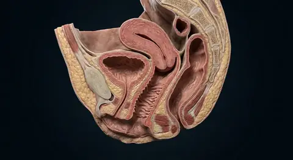
20 documented partsVagina — walls & fornicesA distensible fibromuscular canal lined by glycogen-rich stratified squamous epithelium, recessed around the cervix into anterior, lateral, and posterior fornices.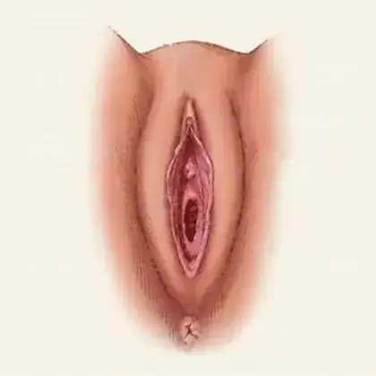
20 documented partsVulva — external genital anatomyHonest surface anatomy of the external female genital region—mons pubis, labia majora and minora, clitoral glans, and separate urethral and vaginal openings.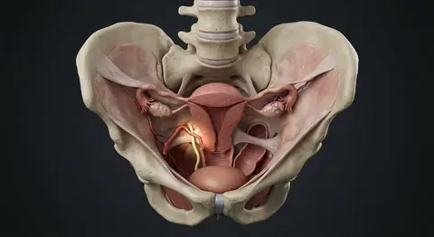
20 documented partsPelvic support & surgical planesHow the tonic levator ani muscular dome, cardinal and uterosacral ligaments, and endopelvic fascial planes suspend pelvic organs above the urogenital hiatus.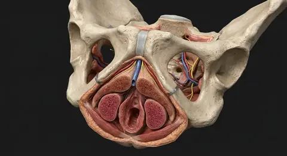
20 documented partsClitoral erectile complexBeyond the visible glans: the internal clitoral body, paired diverging crura anchored to the ischiopubic rami, vestibular bulbs, and dorsal sensory nerves. 20 documented partsEgg cell · oocyte & ovulationInside one of the body's largest cells: the secondary oocyte, protective zona pellucida, nourishing corona radiata, cortical granules, and ovulation timing.
20 documented partsEgg cell · oocyte & ovulationInside one of the body's largest cells: the secondary oocyte, protective zona pellucida, nourishing corona radiata, cortical granules, and ovulation timing.Male reproductive
 20 documented partsMale reproductive systemTemperature-regulated testes, coiled epididymal maturation ducts, muscular vas deferens, accessory glands, and the shared urogenital tract in complete context.
20 documented partsMale reproductive systemTemperature-regulated testes, coiled epididymal maturation ducts, muscular vas deferens, accessory glands, and the shared urogenital tract in complete context. 20 documented partsMale body — anteriorStandard anatomical position on the anterior male figure: palpable bony landmarks, muscular contours, and body-wall regions mapped to underlying internal viscera.
20 documented partsMale body — anteriorStandard anatomical position on the anterior male figure: palpable bony landmarks, muscular contours, and body-wall regions mapped to underlying internal viscera.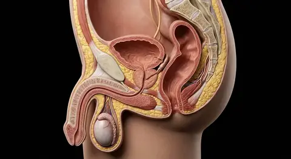
20 documented partsMale pelvis & perineumSagittal and perineal views of the male pelvis: bladder neck, walnut-sized prostate, rectum, levator ani muscular sling, and pudendal neurovascular canals.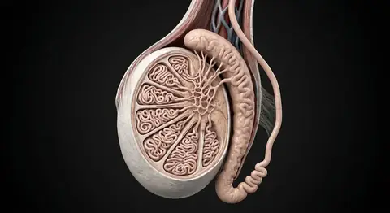
20 documented partsTestis & epididymis — microanatomyInside the fibrous tunica albuginea: 250 testicular lobules, coiled seminiferous tubules, Sertoli blood-testis barrier, rete testis, and epididymal maturation.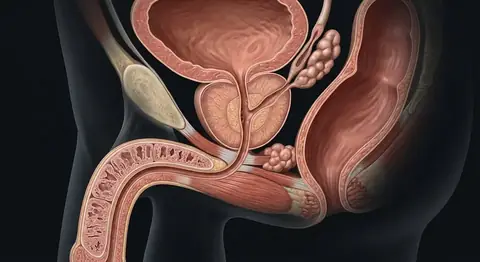
21 documented partsProstate, ducts & penisMcNeal's peripheral, central, and transition zones of the prostate surrounding the prostatic urethra where seminal vesicle and vas deferens ducts converge.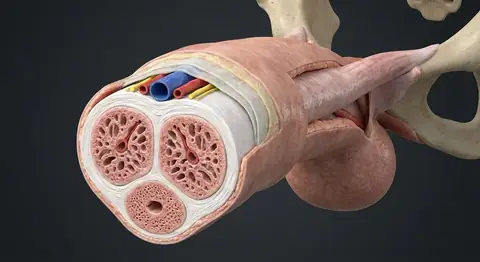
20 documented partsPenile erectile tissueThree cylindrical vascular columns—paired dorsal corpora cavernosa and the ventral urethra-bearing corpus spongiosum—wrapped in tough tunica albuginea and Buck fascia. 20 documented partsSperm cell · anatomy & productionHow a streamlined 55-micrometer cell packs a haploid nucleus, enzyme-filled acrosome, mitochondrial midpiece, and propulsive flagellum to carry paternal DNA.
20 documented partsSperm cell · anatomy & productionHow a streamlined 55-micrometer cell packs a haploid nucleus, enzyme-filled acrosome, mitochondrial midpiece, and propulsive flagellum to carry paternal DNA.Endocrine
 20 documented partsThyroid glandWrapped like a butterfly around the upper trachea, thyroid follicles store iodinated thyroglobulin colloid to pace basal metabolism, with four parathyroids behind.
20 documented partsThyroid glandWrapped like a butterfly around the upper trachea, thyroid follicles store iodinated thyroglobulin colloid to pace basal metabolism, with four parathyroids behind. 20 documented partsEndocrine systemHormone-secreting glands—hypothalamus, pituitary, pineal, thyroid, parathyroids, adrenals, pancreas, and gonads—communicating through bloodstream feedback loops.
20 documented partsEndocrine systemHormone-secreting glands—hypothalamus, pituitary, pineal, thyroid, parathyroids, adrenals, pancreas, and gonads—communicating through bloodstream feedback loops.Lymphatic & immune
 20 documented partsSpleenTucked beneath the left ribs, the spleen pairs immune white-pulp lymphoid follicles with filtering red-pulp cords that recycle aging red blood cells.
20 documented partsSpleenTucked beneath the left ribs, the spleen pairs immune white-pulp lymphoid follicles with filtering red-pulp cords that recycle aging red blood cells.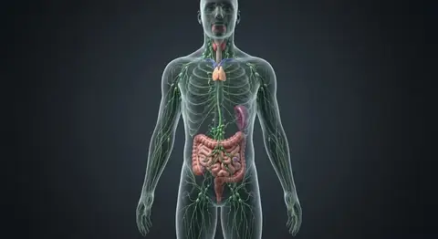
20 documented partsLymphatic systemOne-way lymphatic capillaries, filtering cervical, axillary, and inguinal node chains, the thoracic duct, thymus, and spleen working together for fluid and immunity.Integumentary
 20 documented partsSkinOur largest organ combines a self-renewing stratified epidermis with a collagen-rich dermis housing sweat glands, hair follicles, blood vessels, and touch nerves.
20 documented partsSkinOur largest organ combines a self-renewing stratified epidermis with a collagen-rich dermis housing sweat glands, hair follicles, blood vessels, and touch nerves.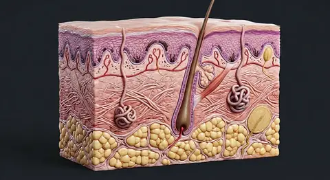
20 documented partsSkin layers & appendagesFive epidermal keratinocyte strata, interlocking dermal papillae, reticular collagen bundles, eccrine and sebaceous glands, and specialized touch corpuscles.